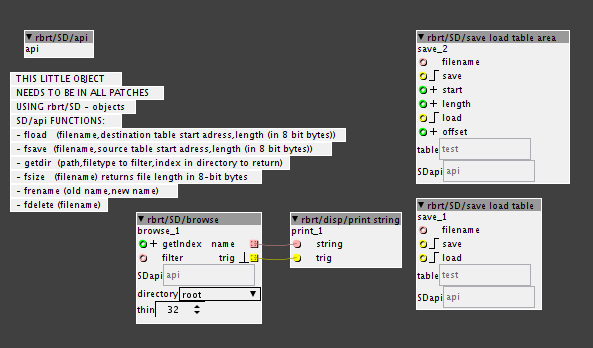

rbrt/SD
here's some objects for SD - card I/O.
the cool thing is that they can save you a lot of SRAM when you need to save/load a lot of different tables,
since the individual objects are using code that is centralized in an object called 'rbrt/SD/api'

..also, you can save/load chunks of a table via 'rbrt/SD/save load table area'.
'rbrt/SD/browse' is a rather minimalistic file-browser that can definitely be improved.
and AH! there's 'rbrt/disp/print string' to display strings in axo's console window.
cheers
R